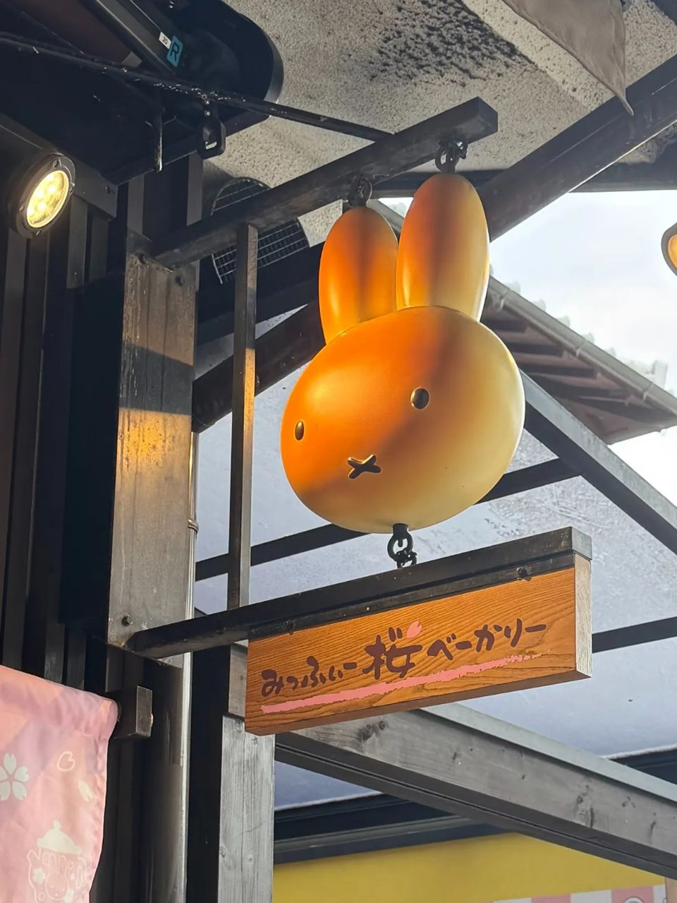
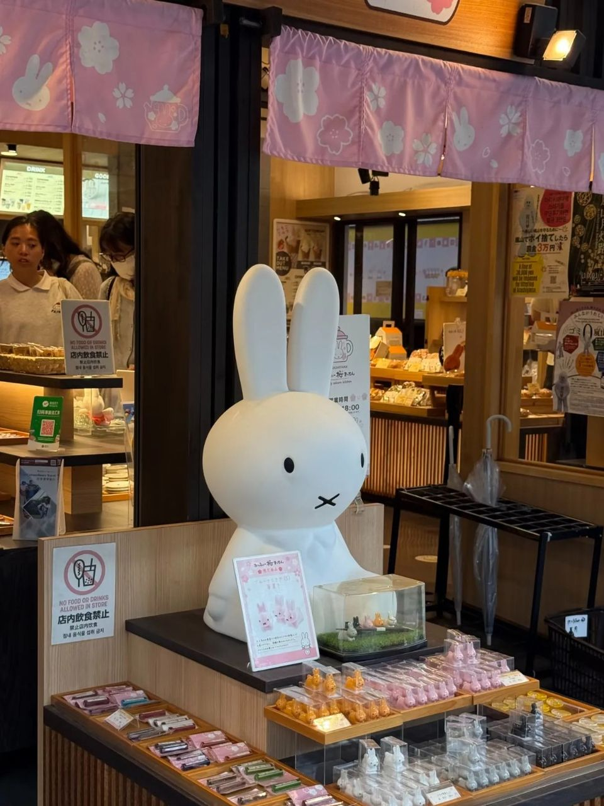
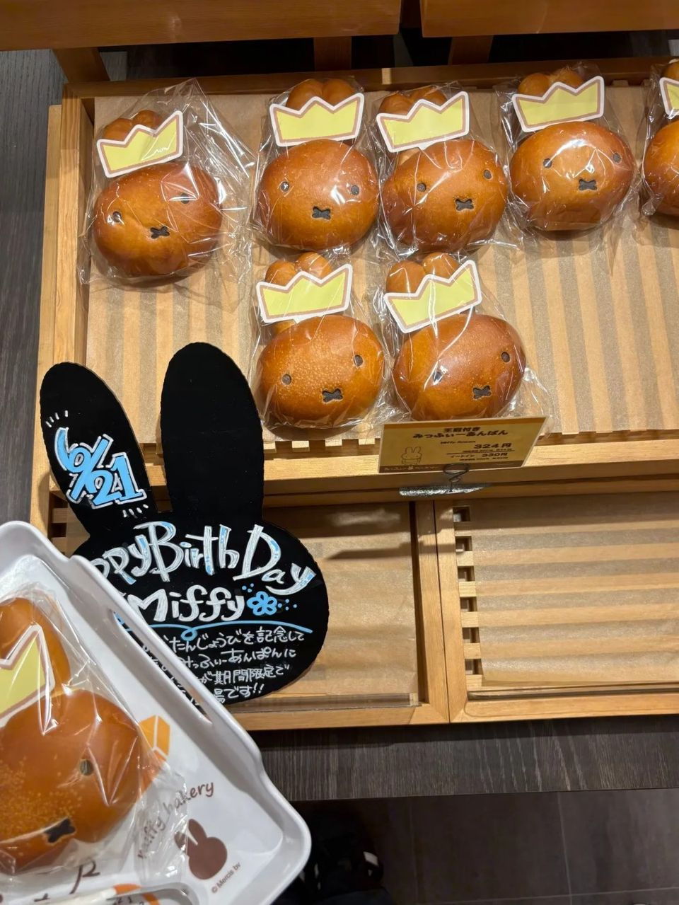
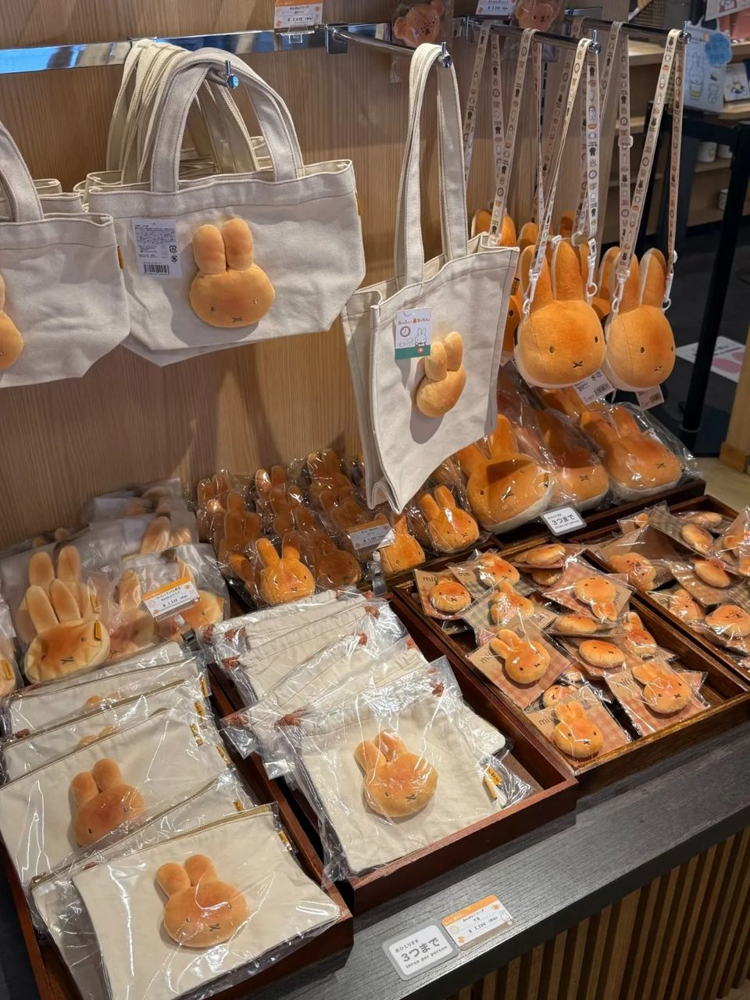
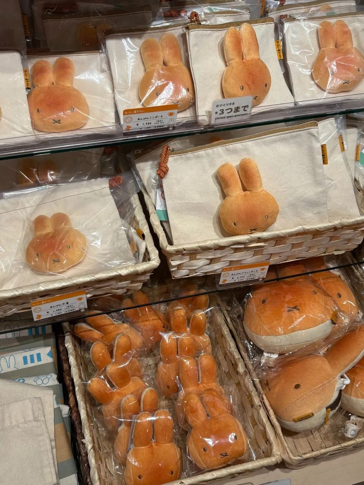

교토 아라시야마 미피 사쿠라 베이커리, 미피 빵·굿즈 구경 후기
미피 단팥빵에 빵 모양 굿즈까지 메챠 카와이! 1인 3개까지만 살 수 있는 상품이 있어서 고민은 필수.
교토 아라시야마 가시면
여기는 꼭 들르셔야 해요 🐰
미피 빵이랑 굿즈가
메챠 카와이한 곳,
미피 사쿠라 베이커리 지금부터 풀어볼게요!

1. 아라시야마에 있는 미피 베이커리!
- 위치: 일본 교토 아라시야마 (아래 '가게 정보'에서 지도 보기)

2. 미피 단팥빵 & 굿즈가 메챠 카와이!
미피 단팥빵에 빵 모양 굿즈까지
구경만 해도 시간 순삭이에요.
전국 몇 개 매장에서만 파는
한정 굿즈도 있어요!


3. 1인 3개까지! 고민은 미리 해 가세요
1인 3개까지만 살 수 있는 상품이 있어서
고민 많이 하셔야 해요 ㅜㅜ

4. 총평
- 추천: 미피 좋아하는 분, 아라시야마에서 기념품 찾는 분